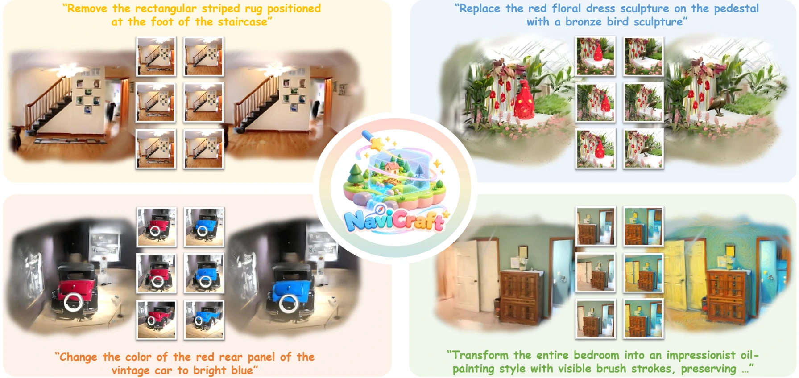

01
NaviVAE
A compact, semantically enriched native 3D representation.
Native 3D scene editing

NaviCraft.
One representation connects perception, instruction, and generation.
A compact, semantically enriched native 3D representation.
Text-guided transformations, directly in native 3D latent space.
Connect native 3D latents to the generative prior.
Align text semantics with native scene representations.
Jointly train text-to-3D synthesis and scene editing.
Improve editing behavior with reinforcement learning.
A scalable foundation for learning generalizable 3D scene transformations.
Instruction fidelity, scene preservation, and coherent appearance across viewpoints.
Evaluation on NaviEdit-Bench
Instruction following, visual score, photometric reprojection loss, and human evaluation.
@misc{wan2026navicraft,
title = {NaviCraft: Scaling Generalizable 3D Scene Editing in Native 3D Latent Space},
author = {Wan, Yecong and Li, Fan and Shao, Mingwen and Zuo, Wangmeng},
year = {2026}
}